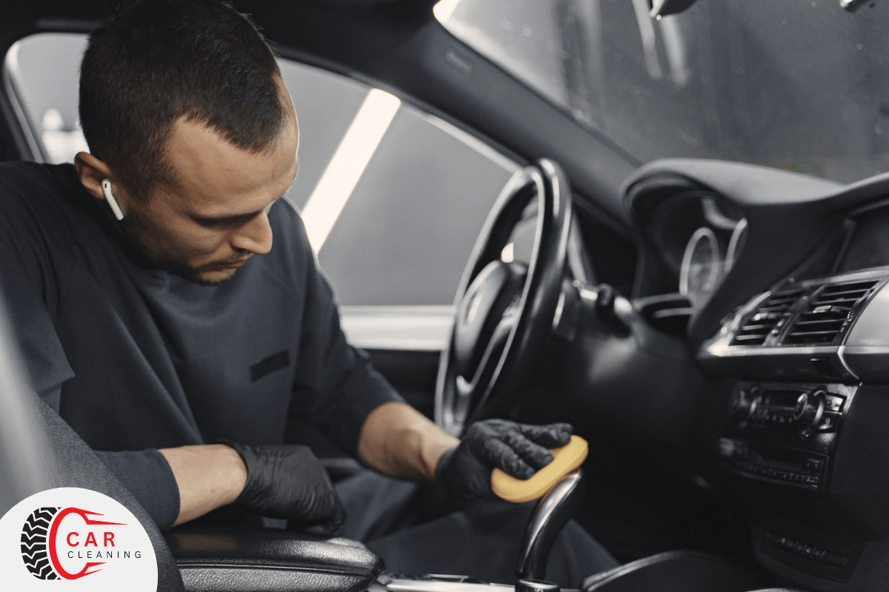

Сертифицированный детейлинг-центр в Севастополе
DETAILING-МОЙКА
Мы поможем вернуть вашему автомобилю первозданный вид от 1800руб
Вы получите идеально чистый результат
Детейлинг-мойка дает вашему автомобилю возможность почувствовать себя не просто в чистом автомобиле, а в идеальном салоне, где не осталось ни пятнышка, ни пылинки.
ДЕТЕЙЛИНГ-МОЙКА — ЭТО
Полный охват
Подвергаем обработке каждый участок: кузов, салон, пластик, кожу, стекла и колеса. Ни одна потоковая автомойка не достигает такой детализации процесса.
Красивый внешний вид
Ощущение, что едешь за рулем только что купленного в салоне автомобиля. Совершенный автомобиль, притягивал взгляды прохожих вам обеспечен.
Длительность воздействия
Эффект от детейлинг мойки сохраняется на протяжении 2-3 недель, так что вы сможете реже приезжать на мойку
Сохраняет детали кузова
В процессе детейлинг-мойки элементы экстерьера покрываются консервирующими составами, что сохраняет их как новыми на длительный срок.
Не наносит вреда ЛКП
В ходе работы применятеся бесконтактная мойка, которая не портит ЛКП вашей машины. В итоге авто выглядит ухоженно и чисто, без дефектов и изъянов.
Усиливает яркость и блеск
Финишные покрытия такие как Koch Protector Wax дают ослепительный блеск и обладают гидрофобным эффектом.
Услуги мойки и эстетического сервиса
Экстерьер автомобиля
2-х фазная EURO мойка кузова
от 1200 р.
3-х фазная PREMIUM мойка кузова
от 2600 р.
DETAILING мойка кузова
от 5000 р.
Интерьер автомобиля
Уборка салона и багажника BASIC
от 700 р.
DETAILING уборкаа салона и багажника
от 3500 р.
Комплексные мойки
Комплексная EURO мойка
от 1000 р.
Комплексная PREMIUM мойка
от 3500 р.
Комплексная DETAILING мойка
от 11000 р.
Защита и блеск
Легковое кварцевое покрытие Ultra Mizu / Guyeon Wetcoat
от 1500 р.
Сезонное полимерное покрытие Sonax (Германия)
от 3500 р.
Мойка днища и подвески
Арки и видимая часть подвески
от 8500 р.
Днище автомобиля
от 3500 р.
Химчистка кузова
Обезжиривание кузова
от 600 р.
Удаление дорожной разметки, опыла от краски, рыжие точки
от 250 р.
Химчистка подкапотного пространства
Мойка моторного отсека
от 1000 р.
Детейлинг моторного отсека
от 3300 р.
Почему выбирают именно нас?
Мы не создаем видимость работ, а реально их делаем, отвечаем за безупречгый результат и даем гарантии на свои услугу
🔴 Индивидуальный подбор
Учитываем особенности поверхностей каждого автомобиля и исходя из этого индивидуально подбираем косметику от ведущих производителей, которая позволяет сохранять автомобиль как можно дольше.
🔴 Полная защита автомобиля
На территории ведется видеонаблюдение — ваш автомобиль под полной защитой охранной организации. Место для авто выделено с запасом, лишние касания исключены.
🔴 Предварительная запись
Записавшись по телефону, вы экономите свое время и ресурсы. Как только приедете в назначенное время, мы приступим к работе.
🔴 Ожидание с комфортом
Вы всегда можете наблюдать за процессом работы, сидя на мыгком диване в нашей зоне ожидания с кондиционером и WI-FI. Предложим кофе, включим приятное кино или PS5.
🔴 Наша команда
В нашей студии работают специалисты, прошедшие обучение и специализацию. Мы собрали команду специалистов со стажем работы от 5 лет, которые возвращают вашему автомобилю красоту без повреждений ЛКП.
🔴 Высокое качество
Низкощелочная химия, крупногабаритные губки и кисти, понимание сути процесса, профессиональное оборудование и желание не навредить вашему авто позволяет выдавать максимальное качество.
Наш подход к работе
Проработав более 5 лет на рынке, мы понимаем, как владельцы относятся к своим авто. Мы также переживаем за автомобиль, как и вы, и поэтому усердно работаем над качеством работы.
Мы отлично разбираемся во всех стадиях осуществления детейлинг-мойки, внимательно и аккуратно работаем с деталями. Выбираем материалы исключительно премиум-класса, так как понимаем, что качество работы напрямую зависит от используемых средств.
Мы не перестаем учиться, непрерывно изучаем рынок, чтобы найти новые технологии, методы и спообы химчистки и мойки. постоянно обновляем оборудование и используем надежную продукцию мировых производителей, проверенную на собственном опыте.
Благодаря такому подходу мы уверены, что результат будет на высшем уровне. Ваше доверие — главная ценность для нас.
5
лет опыта
500+
авто делаем за год
100%
гарантия результата